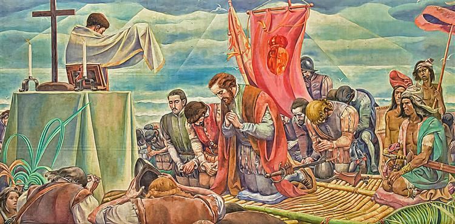

The Philippines in the Nineteenth
Life and Works of Rizal
Life and Works of Rizal
Life and Works of Rizal
Rise of modern ideas influenced by Rizal.

Decline of the Manila–Acapulco trade system.

Shift to export economy and world trade.

Racial hierarchy in Spanish Philippines.
Education and religious influence.
Colonial governance and inequality.